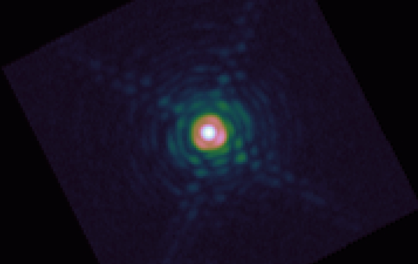
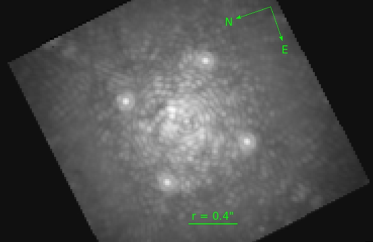

Wavefront Correction: Guide Star Brightness
{kind=link}
Estimated Strehl ratio in H band vs. I band magnitude for a sample of stars observed in September 2017. SCExAO routinely delivers extreme AO corrections in average to good seeing conditions. Extreme-AO correction has been demonstrated down to I = 9-10.
Important note: Strehl Ratio values derived from AO telemetry. Due to non-linearities in WFS and DM, as well as imperfect WFS photon noise calibration, the values quoted here are approximate.
|  | Unocculted K band PSF for LkCa 15 (R ~11).The core is diffraction limited; nine Airy rings are visible. (Data taken by T. Currie) |
|---|
{kind=link}
High Contrast Imaging
|  | CHARIS image slice at 1.15 microns for a 5th magnitude star obtained under very good seeing conditions. A faint dark hole is visible as are four satellite spots used for spectrophotometric calibration and image registration. (Data taken by T. Currie) |
|---|
{kind=link}
{kind=link}
Raw 5-sigma broadband contrast obtained for stars at S.R. ~0.75 and 0.9 (corrected for finite sample sizes). Towards the highest Strehl ratios, the raw contrast curve is nearly flat from 0.3” to 0.6”. The curves are computed by measuring, at each radius, the surface brightness standard deviation (assumed here to be the noise), and multiplying it by 5.
File ./010usingSCExAO.web/015onskyperf.web/content.html last modified 09/08/2018 19:53:00 HST